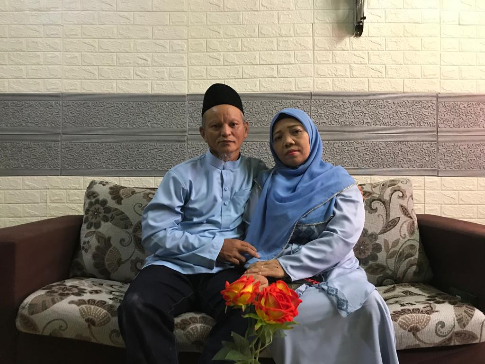
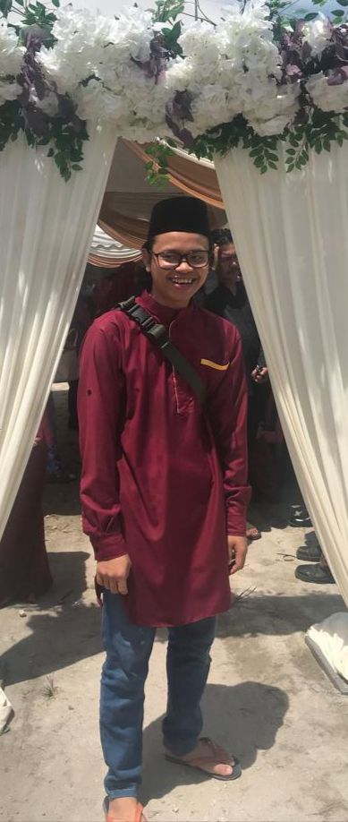
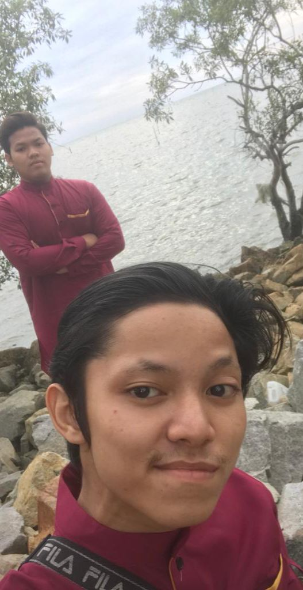
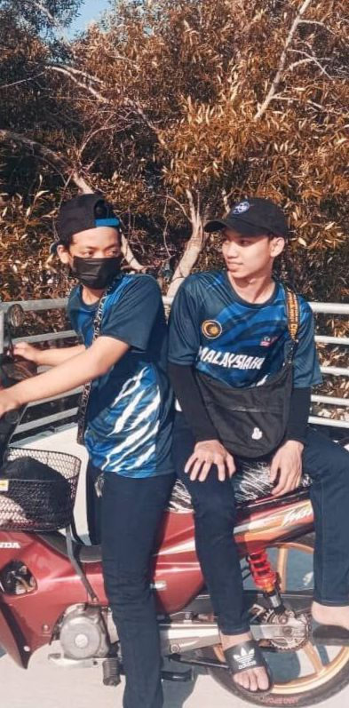
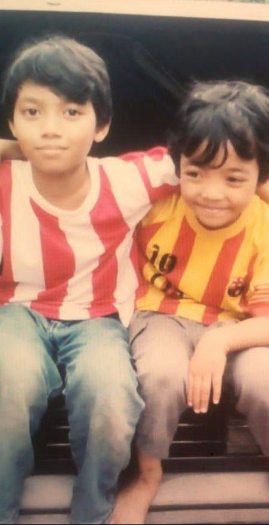
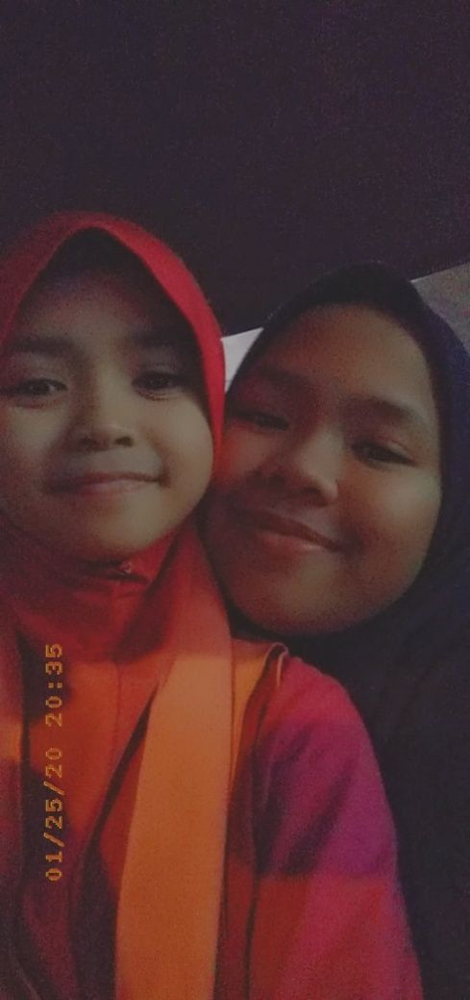
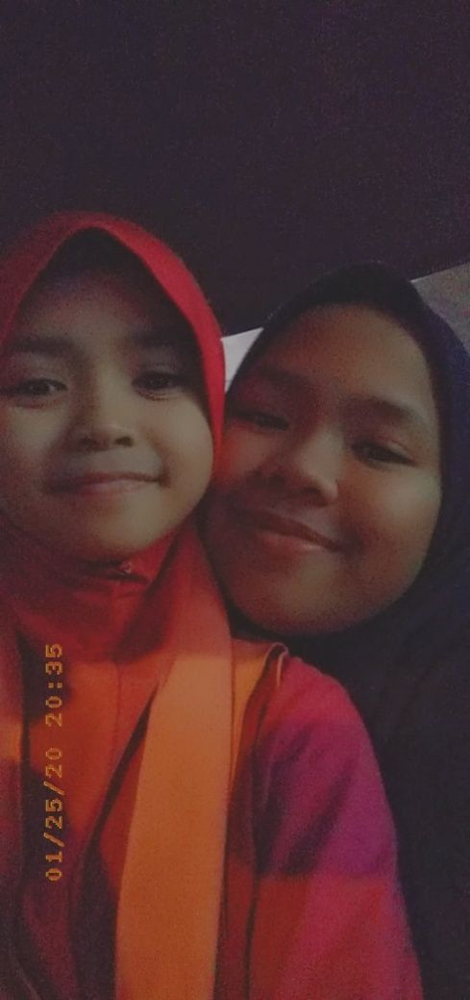

|  |
| Hey guys do you know that this is a person that very gorgeous and importand in my life.
Mama who is always stay by myside in everthing and everytime needed she always give me a motivated.
Her name is Suparmi Binti Kamari.I always call her as supermama because she can do everything for me.
Also I would like to introduce about my strong man,I call he as Abah.He is a calm person and very friendly.
He teach me a lot of things such as how can I survive my life outside.
I always admire my abah hardworking and spiritual towards everthing he want to do because he will make sure it is the best for my family.
He name is Mohd Rosle Bin ABD Karim. |
| Muhammad Nur Zam Zam he is my elder brother and also known as zamzamrosle.He is just finish his study at MSU and now currenly doing some work
for waiting his graduation day.This is Angah his name is Mohd Nur Zahari.He is a person that very friendly I think he follow our father’s. |
 |
 |
This is my 2 youngers brother they always make people confius because known as a twin but actually they are not.
Muhammad Nur Zaharin he is a very active and chearfull person.He is now just finish his SPM.
Muhammad Nur Zahim he is a sweet and caring person.They both is actually a troublemaker in my family but very importand
because make our family become more happy and have something to laugh everytime. |
| This is my girls they are very cute and sweet.Siti Nur Najwa Amilen a person who is very supportive and happy go lucky.
She always send a motivation advise to make me become strong when im in low motivation to do something.
Adik a very cute and importand person in our family.She is the most adorable and talkative. |
   |
 |
“FAMILY WHERE LIFE BEGINS & LOVE NEVER ENDS” |
| ‘LOVING MY FAMILY IS MY PRIORITIES’ |
 |